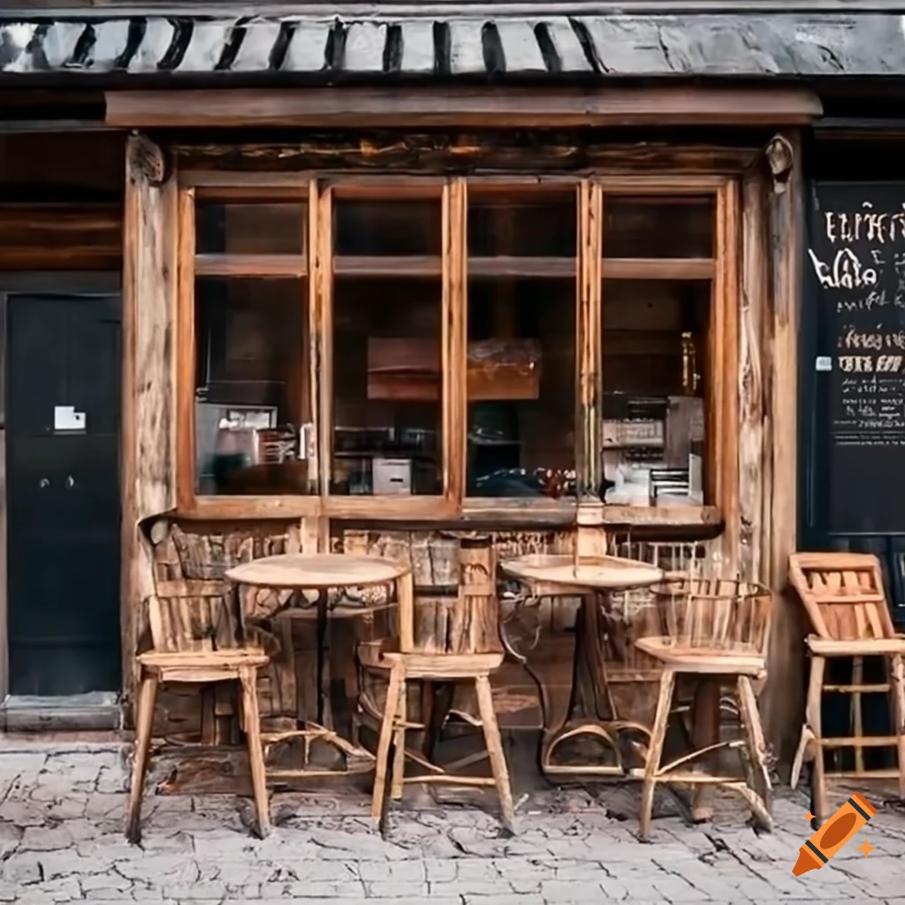
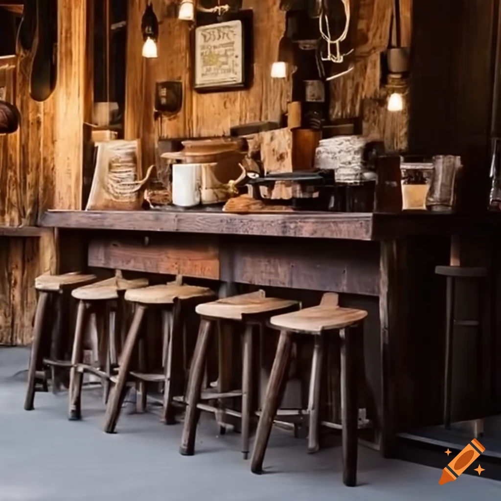

est. 1987
Welcome to Parvati, a charming rustic coffee shop and eatery that has been serving delightful brews and delectable bites since 1987. Steeped in tradition and nestled in the heart of Timaru, our quaint establishment invites you to step back in time and experience the warmth and tranquility of an era gone by. From the moment you step through our doors, you'll be enveloped in the comforting aroma of freshly ground beans, the tantalizing scents of freshly baked pastries, and the inviting ambiance that transports you to a simpler, more nostalgic time.
 At Parvati, we believe that great coffee and delicious food go hand in hand. Our skilled baristas meticulously craft each cup, ensuring every sip is a symphony of flavors, while our talented chefs prepare a delightful array of culinary delights that perfectly complement your chosen brew. Whether you're in the mood for a velvety latte paired with a flaky croissant, or a robust espresso accompanied by a mouthwatering quiche, we take pride in delivering the highest quality offerings that will awaken your senses and leave you craving more.
 Step outside the chaos of the modern world and immerse yourself in the rustic charm of Parvati. Our cozy nooks, crackling fireplace, and tantalizing aromas beckon you to unwind, relax, and savor the simple pleasures of life. Be it engaging conversations with old friends over steaming cups of coffee or indulging in a leisurely brunch with loved ones, our coffee shop and eatery provides the perfect backdrop for creating cherished memories. Join us at Parvati, where time slows down, the rich aroma of coffee fills the air, and the tantalizing flavors of our food will transport you to a place where tradition and culinary delights intertwine.
Theme